Puedes acceder a este santuario desde que llegas a la torre del lago. Está escondido entre rocas en el centro de la Isla Hylia, pero puedes acceder a la entrada en cualquier momento.
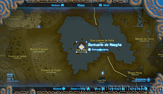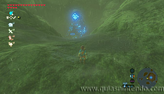
Tendrás que usar el poder de tus bombas, de hecho, tendrás que combinar la explosión tanto de las esféricas como de las cúbicas.
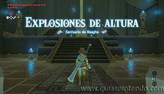
Colcoa una bomba esférica en el tubo que hay junto al gran bloque. Después sube las escaleras para ponerte sobre el bloque y allí deja una bomba cúbica.
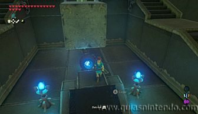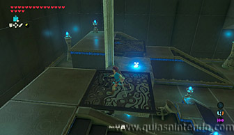
Ahora, si miras hacia arriba, verás unos bloques en el techo que pueden romperse. Lo que debes hacer es explotar primero la bomba esférica para que el gran bloque salga despedido hacia arriba. Después cambia a las bombas cubicas justo cuando el bloque esté junto al techo.
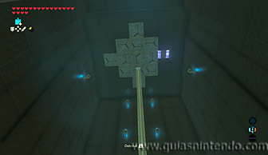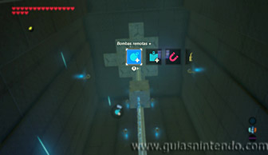
Haz explotar la bomba cúbica cuando esté arriba y abrirás un hueco en el techo.
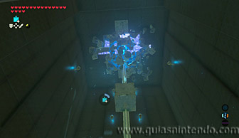
Coloca una segunda bomba esférica en el tubo inferior y súbete al gran bloque. Ahora permanece ahí arriba cuando la hagas explotar y serás tú el que salga despedido hacia arriba. Así podrás planear para posarte sobre la columna que tiene un cofre (contiene una Espada del vigilante).
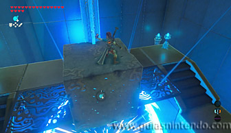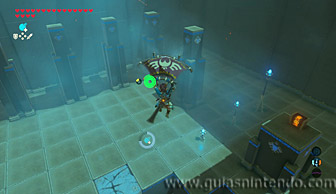
Después de abrir el cofre planea para llegar al altar y obtener un símbolo de valía.
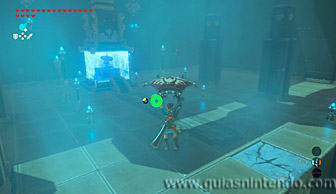